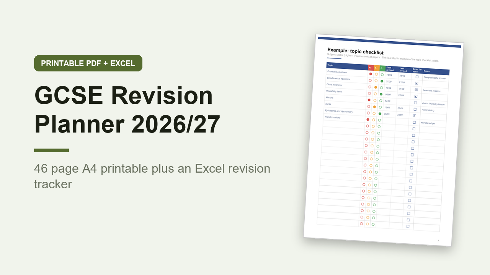

GCSE Revision Planner 2026/27, Printable A4 PDF and Excel Revision Tracker
GBP 6.00 · instant digital download

A revision planner for Year 11, from September 2026 to the summer 2027 GCSE exams.
UK spelling, A4 paper, grades 9 to 1.
What you get: 2 files.
1.
A printable A4 PDF, 46 pages, not editable, you print it and write on it.
Inside: how to use, a page on ways to revise that work, a filled in example topic checklist, my subjects and target grades, a mock exam timetable, a summer 2027 exam timetable, month pages from September 2026 to June 2027 with England and Wales bank holidays marked, a week by week plan with dates for all 34 weeks from 2 November 2026 to 21 June 2027, 2 school week and 2 holiday week revision timetables, 10 topic checklists with red, amber and green circles, 2 past paper tracker pages, mock results, a flashcard review log, 2 blurt pages, 2 weekly reviews, an exam day checklist, 2 notes pages and a squared page.
2.
An editable Excel workbook (.xlsx) with 7 sheets: Start here, Summary, Subjects, Topics (300 rows), Revision Log (400 rows), Past Papers (150 rows) and Exams.
It counts red, amber and green topics per subject with a chart, tells you when each topic is due for another look, adds up hours revised, averages past paper scores and counts down to your next exam.
A worked example is filled in.
Exam dates are left for you to fill in from your own school.
Opens in Excel, Google Sheets and Numbers.
Digital download, nothing is posted..
What happens after you buy
Payment and delivery are handled by Gumroad. You get the download straight after paying, and a copy of the link by email. Nothing is posted to you.
Tags: gcse revision, revision planner, gcse planner, study planner, revision timetable, year 11, exam planner, gcse 2027, a4 printable, revision tracker